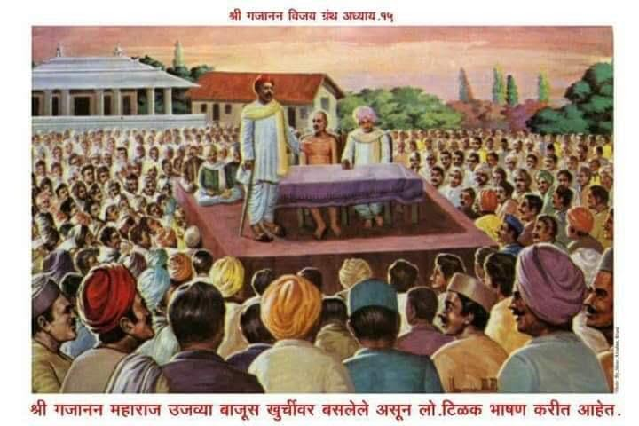

॥ अध्याय १५॥

॥ श्रीगणेशाय नमः ॥
हे कश्यपात्मज वामना ।
हे बटुरुपधारी नारायणा ।
तूं बलीच्या घेऊन दाना ।
कृतार्थ त्याला केलेंस ॥१॥
राज्य मृत्युलोकीचें ।
घेतलें त्वां जरी साचें ।
तरी दिलें पाताळाचें ।
राज्य बलीकारणें ॥२॥
आंवळा घेऊन नारळ दिला ।
तुम्ही त्या पुण्यवंत बलीला ।
आणि त्याच्या भक्तीस्तव झाला ।
द्वारपाळ द्वारीं तुम्ही ॥३॥
या मन्वंतरानंतर ।
बलीच आहे होणार ।
देवांचा राजराजेश्वर ।
देवा तुझ्या वरानें ॥४॥
एक घटकेंत अनंता ।
चहूं वेदांच्या संहिता ।
पठण केल्या बुद्धिमत्ता ।
केवढी तुझी अगाध तरी ! ॥५॥
अवघ्यां तुझ्या अवतारीं ।
हा सोंवळा अवतार श्रीहरी ।
कोणाचाही भूमीवरी ।
वध न तुम्ही केलांत ॥६॥
शत्रुमित्राच्या घरीं दिवा ।
ये अवतारीं लाविला बरवा ।
देव आणि दानवा ।
तूं वंद्य सारखाच ॥७॥
देव तेही आनंदविले ।
राक्षस तेही रक्षिलें ।
आपलें ईशत्व सांभाळिलें ।
याच अवतारीं देवा तूं ॥८॥
तुला माझा नमस्कार ।
असो वामना वारंवार ।
मस्तकीं ठेवा वरद कर ।
तुम्ही दासगणूच्या ॥९॥
टिळक बाळ गंगाधर ।
महाराष्ट्राचा कोहिनूर ।
दूरदृष्टिचा सागर ।
राजकारणीं प्रवीण जो ॥१०॥
निज स्वातंत्र्याच्यासाठीं ।
ज्यानें अनंत केल्या खटपटी ।
ज्याची धडाडी असे मोठी ।
काय वर्णन तिचें करुं ? ॥११॥
करारी भीष्मासमान ।
आर्य महीचें पाहून दैन्य ।
सतीचे झाला घेतां वाण ।
भीड न सत्यांत कोणाची ॥१२॥
वाक्चातुर्य जयाचें ।
बृहस्पतीच्या समान साचें ।
धाबें दणाणें इंग्रजांचें ।
पाहून ज्याच्या लेखाला ॥१३॥
कृति करुन मेळविली ।
ज्यानें लोकमान्य ही पदवी भली ।
ती न कोणी त्यांना दिली ।
ऐसा होता बहाद्दर ॥१४॥
तो एके वेळीं अकोल्याला ।
शिवजयंतीच्या उत्सवाला ।
लोकाग्रहें येतां झाला ।
व्याख्यान द्याया कारणें ॥१५॥
झाली तयारी उत्सवाची ।
त्या अकोल्यामध्यें साची ।
मोठमोठाल्या विद्वानांची ।
गेली गडबड उडून ॥१६॥
दामले, कोल्हटकर, खापर्डे ।
आणखी विद्वान् बडेबडे ।
जमते झाले रोकडे ।
तया अकोल्या ग्रामासी ॥१७॥
अध्यक्ष त्या उत्सवाचे ।
नेमिले होते टिळक साचे ।
नांव ऐकतां टिळकांचें ।
वर्हाड सारें आनंदलें ॥१८॥
शिवरायाची जयंती ।
याच्या आधींच या प्रांतीं ।
झाली पाहिजे होती ।
त्याचें कारण ऐसें पहा ॥१९॥
शिवाजीची जन्मदात्री ।
जी वीरमाता जिजा सती ।
ती वर्हाडीच आपुली होती ।
सिंधखेडीं जन्म जिचा ॥२०॥
त्या वीरगाजी शिवाजीला ।
जिनें पोटीं जन्म दिला ।
वर्हाडमहाराष्ट्र एक झाला ।
या सतीच्या कर्तृत्वें ॥२१॥
माता होती वर्हाडी ।
पिता महाराष्ट्री शहाजी गडी ।
अवघ्या दंपत्यांत ही जोडी ।
खचित होती अनुपम ॥२२॥
आधींच उत्सव शिवाजीचा ।
जो कलिजा महाराष्ट्राचा ।
आणखी वरी अध्यक्ष त्याचा ।
टिळक बाळ गंगाधर ॥२३॥
आधीं एक महिना तयारी ।
उत्सवाची चालली खरी ।
ज्याच्या त्याच्या अंतरीं ।
आनंद होत चालला ॥२४॥
अध्यक्ष उपाध्यक्श निवडले ।
स्वयंसेवक तयार झाले ।
तईं कईकांचें म्हणणें पडलें ।
ऐशा रीतिं विबुध हो ॥२५॥
या शिवजयंती उत्सवाला ।
आणा शेगांवचे महाराजाला ।
श्रीस्वामी समर्थ गजाननाला ।
म्हणजे दुधांत साखर पडेल कीं ॥२६॥
शिवाजीच्या राष्ट्रोद्धारा ।
आशीर्वाद होता खरा ।
समर्थांचा साजिरा ।
म्हणून तडीस गेला तो ॥२७॥
टिळकांचें राजकारण ।
हेंच जिजाई-हृदय-रत्न ।
त्याला पाहिजे आशीर्वचन ।
समर्थंचि विबुध हो ॥२८॥
ते कित्येकां पसंत पडलें ।
कित्येकांस नाहीं रुचलें ।
ज्यां न रुचले ते बोलले ।
उघड उघड येणें रीतिं ॥२९॥
तो शेगांवाचा अवलिया ।
कशास आणितां ये ठायां ।
तो कांहीं तरी करुनियां ।
विक्षोभ करील सभेचा ॥३०॥
फिरेल नागवा सभेंत ।
"गिण गिण गणांत" ऐसा म्हणत ।
मारील वाटे कदाचित् ।
तो लोकमान्याला ॥३१॥
कांहीं लोक बोलले ।
हें न म्हणणें चांगलें ।
गजाननाचीं पाउलें ।
लागलीं पाहिजेत सभेला ॥३२॥
त्याचें जें कां वेडेपण ।
तें आहे वेडयाकारण ।
जे कोणी विद्वान् सज्जन ।
त्यासी न वदती वेडयापरी ॥३३॥
खरेखुरे राष्ट्रोद्धारक ।
जरी टिळक असतील एक ।
तरी महाराज निःशंक ।
सभेसी येतील ये ठायां ॥३४॥
खर्याखोटयाची परीक्षा ।
साधूच हे करिती देखा ।
म्हणून सांगतों भिऊं नका ।
त्यांना आमंत्रण देण्यास ॥३५॥
ऐसी भवति न भवति झाली ।
मंडळी शेगांवास आली ।
आमंत्रण तें द्याया भली ।
सभेचें श्रीगजानन ॥३६॥
येतांच दादा खापडर्यासी ।
बोलते झाले पुण्यराशी ।
आम्ही येऊं सभेसी ।
तुमच्या शिवाजी उत्सवाच्या ॥३७॥
वेडयापरी न तेथें करुं ।
जागींच बसून मौन धरुं ।
सुधारकांचा कधीं न करुं ।
मनोभंग मनाचा ॥३८॥
करावयासी राष्ट्रोद्धार ।
योग्य बाळ गंगाधर ।
याच्या परी न होणार ।
राष्ट्रप्रेमी पुरुष पुढें ॥३९॥
स्नेही त्या टिळकाचा ।
अण्णा पटवर्धन नांवाचा ।
शिष्य नरसिंहसरस्वतीचा ।
आळंदीचा असे जो ॥४०॥
त्या दोघां पुरुषां पाहाण्यास ।
आम्ही येऊं अकोल्यास ।
तें ऐकतां खापर्डयास ।
अती आनंद जाहला ॥४१॥
पाहा पाहा कोल्हटकरा ।
वर्हाडप्रांताचा ज्ञानहिरा ।
यानें वृत्तान्त जाणिला सारा ।
जो का झाला अकोल्यांत ॥४२॥
यावरुन संतांचें ।
ज्ञान केवढें अगाध साचें ।
खर्या राष्ट्रपुरुषाचें ।
प्रेम यांना पाहा किती ! ॥४३॥
बोलावयाची आपणांस ।
जरुर पडली कांहीं न खास ।
तेच होऊन आपणांस ।
येतो म्हणून म्हणाले ॥४४॥
मुहूर्त या उत्सवाला ।
अती उत्तम लागला ।
चला वंदून समर्थाला ।
आपण जाऊं अकोल्यास ॥४५॥
खापर्डे कोल्हटकर ।
निघून गेले साचार ।
आला आठ दिवसांवर ।
सभेचा तो दिवस पाहा ॥४६॥
वर्हाड सारें आनंदलें ।
ज्यांना त्यांना वाटलें ।
कधीं टिळकांचीं पाउलें ।
पाहूं आम्ही अकोल्यांत ॥४७॥
शके अठराशें तिसासी ।
ती सभा होती वैशाखमासीं ।
वर्हाडप्रांतीं अकोल्यासी ।
उभारिलेल्या मंडपांत ॥४८॥
सण अक्षय्यतृतीयेचा ।
वर्हाडप्रांतीं महत्त्वाचा ।
परी समुदाय जनांचा ।
मिळता झाला प्रचंड ॥४९॥
तोच अखेरीचा दिन ।
त्या सभेचा होता जाण ।
लोक आले लांबलांबून ।
लोकमान्यांसी पहावया ॥५०॥
शिवाय श्रोते त्या दिवशीं ।
महाराज येणार सभेसी ।
ऐसी खबर लोकांसी ।
आधींच होती विबुध हो ॥५१॥
मंडप चिकार भरुन गेला ।
जो तो पाहूं लागला ।
म्हणती कां हो सभेला ।
अजूनी न आले महाराज ॥५२॥
परी ते सभा भरण्याआधीं ।
येऊन बसले मंडपामधीं ।
साधु आपल्या वाणीस कधीं ।
असत्यता न येऊं दे ॥५३॥
सभेमाजीं उच्च स्थानीं ।
बसले होते कैवल्यदानी ।
गादीस लोडा टेकूनी ।
जीवनमुक्त साधुवर ॥५४॥
सिंहासनाच्या अग्रभागा ।
टिळकास दिली होती जागा ।
त्यांच्या सन्निध बसले बघा ।
अण्णासाहेब पटवर्धन ॥५५॥
श्रीकृष्णाचा नंदन ।
गणेश ज्याचें नामाभिधान ।
खापर्डे कुलाचा कुलभूषण ।
एक्या बाजूस टिळकाच्या ॥५६॥
दामले कोल्हटकर त्या ठायीं ।
भावे व्यकंटराव देसाई ।
सभेचे पुढारी पाही ।
चमकत होते ते ठायां ॥५७॥
आणिक व्याख्याते विद्वानेतर ।
बसले होते सभोंवार ।
त्यांचें वर्णन कोठवर ।
करावें मी एक्या मुखें ॥५८॥
सभेलागीं आरंभ झाला ।
हेतु प्रथम निवेदिला ।
मग व्याख्यानसिंह उठला ।
टिळक बोलावयातें ॥५९॥
"दिवस आजचा धन्य धन्य ।
आहे पहा हो सज्जन ।
स्वातंत्र्यासाठीं ज्यानें प्राण ।
खर्चिले आपुले पूर्वकालीं ॥६०॥
त्या धनुर्धर योध्याची ।
वीर गाजी शिवाजीची ।
जन्म-जयंति आहे साची ।
म्हणून आपण मिळालों ॥६१॥
त्या रणगाजी शिवाजीला ।
रामदासें हातीं धरिला ।
म्हणून त्याचा बोलबाला ।
झाला भरतखंडामध्यें ॥६२॥
तेवींच आज येथें झालें ।
आशिर्वाद द्याया आले ।
श्रीगजानन साधु भले ।
आपुलीया सभेस ॥६३॥
म्हणून शिवाजीचे परी ।
सभा यशस्वी होवो खरी ।
अशाच सभेची जरुरी ।
आहे सांप्रत राष्ट्राला ॥६४॥
स्वातंत्र्यसूर्य मावळला ।
दास्यत्वाचा काळोख पडला ।
स्वातंत्र्य नाहीं जगीं ज्याला ।
तो समाज प्रेतवत् ॥६५॥
यासाठीं म्हणून ।
आहे करणें प्रयत्न ।
ज्या शिक्षणेंकरुन ।
राष्ट्रप्रेम वाढेल हो ॥६६॥
ऐसें शिक्षण पुढिल्यांप्रती ।
देणें भाग निश्चिती ।
तें शिक्षण हा भूपती ।
देईल कां हो अर्भकांला ?" ॥६७॥
ऐसें टिळक म्हणाले ।
महाराज आसनीं उठून बसले ।
गर्जून त्रिवार बोलले ।
नाहीं नाहीं ऐसें पहा ॥६८॥
आवेशाच्या भरांत ।
बोलले गंगाधरसुत ।
जें बोलणें किंचित् ।
टोचून होतें राजाला ॥६९॥
त्या भाषणाचा रोख भला ।
समर्थांनीं जाणिला ।
आणि हांसत हांसत शब्द केला ।
ऐशा रीतिं श्रोते हो ॥७०॥
अरे अशानेंच पडतात ।
काढण्या दोन्ही दंडांप्रत ।
ऐसें बोलून गणगणांत ।
भजन करुं लागले ॥७१॥
सभा निर्विघ्न पार पडली ।
टिळकांची वाहवा झाली ।
खरें झालें त्याच सालीं ।
समर्थांचें भाकित ॥७२॥
भूपतीनें टिळकाला ।
एकशें चोवीसाखालीं धरिला ।
दोर्या पडल्या दंडाला ।
आला प्रसंग शिक्षेचा ॥७३॥
राजसत्तेचिया पुढें ।
कोणाचेंही न चाले घोडें ।
वकील होते बडे बडे ।
ते झटूं लागले टिळकास्तव ॥७४॥
प्रेमी मंडळी टिळकांची ।
जी कां होती जिव्हाळ्याची ।
त्यांनीं पारमार्थिक उपायाची ।
केली योजना एक अशी ॥७५॥
दादासाहेब खापर्डे ।
हेही होते गृहस्थ बडे ।
ते उमरावतीहून मुंबईकडे ।
जाऊं लागले खटल्यास्तव ॥७६॥
अकोल्याच्या स्टेशनावरी ।
कोल्हटकरास मधुरोत्तरीं ।
बोलते झाले ऐशापरी ।
तें थोडकें सांगतों ॥७७॥
तुम्ही जावें शेगांवासी ।
समर्था विनंती करा ऐसी ।
सोडवा बाळ टिळकासी ।
प्रसंग मोठा दुर्धर ॥७८॥
मीच गेलों असतों तेथें ।
परी मी जातों मुंबईतें ।
तुम्ही जाऊन शेगांवातें ।
विनंती करा महाराजा ॥७९॥
लगेंच बसला गाडींत ।
कोल्हटकर टिळक-भक्त ।
येतां झाला शेगांवांत ।
स्वामी गजाननाकडे ॥८०॥
तईं महाराज मठातें ।
निज आसनीं निजून होते ।
तीन दिवस जहाले पुरते ।
परी न उठले यत्किंचित् ॥८१॥
कोल्हटकरहि तोंवरी ।
बसला मठाभीतरीं ।
जो का असेल बिगारी ।
तो न ऐसें वागे कदा ॥८२॥
कळकळ टिळकाविषयींची ।
कोल्हटकरा पूर्ण साची ।
कमाल त्यानें चिकाटीची ।
केली असे आपुल्या ॥८३॥
जाळावांचून नाहीं कड ।
मायेवांचून नाहीं रड ।
ऐसी आहे एक जाड ।
म्हण मराठी भाषेमध्यें ॥८४॥
चवथें दिवशीं समर्थ उठले ।
कोल्हटकरास बोलते झाले ।
तुम्ही अलोट प्रयत्न केले ।
परी न फळ येईल त्या ॥८५॥
अरे छत्रपती शिवाजीला ।
रामदासाचा वशिला ।
होता परी तो कैद झाला ।
बादशाही अमंलांत ॥८६॥
सज्जनास त्रास झाल्याविना ।
राज्यक्रांति होईना ।
कंसाचा तो मनीं आणा ।
इतिहास म्हणजे कळेल ॥८७॥
ही मी देतों भाकर ।
ती खाऊं घाला लवकर ।
टिळकांप्रती अंतर ।
यांत कांहीं करुं नका ॥८८॥
या भाकरीच्या बळावरी ।
तो मोठी करील कामगिरी ।
जातो जरी फार दूरी ।
परी न त्याला इलाज ॥८९॥
ऐसें ऐकतां उत्तर ।
साशंक झाले कोल्हटकर ।
समर्था करुन नमस्कार ।
भाकर करीं घेतली ॥९०॥
ती नेऊन मुंबईला ।
घातली टिळकास खायाला ।
वृत्तान्त तोही कथन केला ।
अथपासून इतिवरी ॥९१॥
तो ऐकून लोकांप्रत ।
टिळक बोलले हंसत हंसत ।
स्वामींचें तें अगाध सत्य ।
ज्ञान आहे खचित पहा ॥९२॥
यश तुमच्या प्रयत्नासी ।
नाहीं निश्चयेंसी ।
आपुली बाजू रक्षण्यासी ।
सरकार न्याया पाळीन ना ॥९३॥
जेव्हां स्वार्थाचा संबंध नसतो ।
तेव्हां न्याय आठवतो ।
हा जगाचा सिद्धान्त तो ।
होईल खोटा कोठूनी ? ॥९४॥
माझ्या हातें कामगिरी ।
मोठी होणार आहे खरी ।
ऐशी समर्थांची वैखरी ।
बोलली हें गूढ एक ॥९५॥
भूत भविष्य वर्तमान ।
जाणताती साधुजन ।
आपण मनुष्य सामान्य ।
पाहूं पुढें काय होतें ॥९६॥
प्रसाद म्हणून भाकरी ।
ती कुसकरुन भक्षिली खरी ।
दंत न मुखाभीतरीं ।
परी प्रसाद टाकवेना ॥९७॥
झाली शिक्षा टिळकास ।
नेलें ब्रह्मदेशीं मंडाल्यास ।
तेथें जन्मला गीतारहस्य ।
गीतेवरील ग्रंथ त्यांचा ॥९८॥
हीच मोठी कामगिरी ।
झाली त्यांच्या हस्तें खरी ।
मान जगत्-गुरुपरी ।
मिळता झाला टिळकांतें ॥९९॥
या गीताशास्त्रावर ।
टीका झाल्या अपार ।
त्या सांगूं तरी कोठवर ? ।
मति नाहीं दासातें ॥१००॥
बुध हो प्रत्येक आचार्यांनीं ।
कालमानातें पाहूनी ।
केली गीतेची मांडणी ।
जगदोद्धार करावया ॥१॥
कोणीं लाविली अद्वैतपर ।
कोणीं लाविली द्वैतपर ।
कोणीं लाविली कर्मपर ।
त्याच एका गीतेला ॥२॥
हीच मोठी कामगिरी ।
त्यांच्या हस्तें झाली खरी ।
या कामाची नये सरी ।
कोणत्याही कृत्यातें ॥३॥
येणेंच बाळ गंगाधर ।
जगतीं होतील अजरामर ।
कीर्ति त्यांची दूरवर ।
पसरवील ग्रंथ हा ॥४॥
स्वातंत्र्य जरी मिळविलें असतें ।
तरी न ऐशी कीर्ति टिकते ।
पहा करुन चित्तातें ।
पूर्णपणें विचार ॥५॥
स्वातंत्र्य हे साचार।
येतें जातें वरच्यावर ।
त्यांत फारसें नाहीं सार ।
तो व्यवहार लौकिकीं ॥६॥
गीताशास्त्राचें तसें नाहीं ।
तें मोक्षपदा प्रती देई ।
आणि समाजाची बसवी पाही ।
विस्कळीत घडी हें ॥७॥
यावच्चंद्रदिवाकर ।
पुरुष बाळ गंगाधर ।
चिरंजीव निरंतर ।
राहील कीर्तिरुपानें ॥८॥
असो करवीर कोल्हापुरीचा ।
द्विज चित्पावन जातीचा ।
श्रीधर गोविंद नांवाचा ।
काळे उपनांव जयाचें ॥९॥
तो गरिबीच्या स्थितींत ।
गेला इंग्रजी शाळेंत ।
आंग्लविद्या शिकण्याप्रत ।
मँट्रिक परीक्षा पास झाला ॥११०॥
पुढें काँलेजांत गेला ।
परी इन्टर नापास झाला ।
म्हणून फिरत राहिला ।
वर्तमानपत्रें वाचीत ॥११॥
तों केसरी पत्रांत ।
वाचलें ओयामा टोगो चरित्र ।
तेणें त्याच्या मनांत ।
वृत्ति एक उठली अशी ॥१२॥
आपण जावें विलायतेला ।
यंत्रविद्या ही शिकण्याला ।
उगे भार भूमीला ।
होण्यामाजीं अर्थ काय ? ॥१३॥
टोगो यामा दोघेजण ।
प्रथमतः ज्ञान संपादून ।
अभ्युदयाकारण ।
जपान आणीते जहाले ॥१४॥
तैसें आपण करावें ।
मायभूमीस उद्धरावें ।
ऐसा विचार त्याच्या जीवें ।
घेतला परी इलाज ना ॥१५॥
द्रव्याची न लागे संगत ।
कोणीही ना करी मदत ।
घरची गरीबी अत्यंत ।
काय करितो बिचारा ॥१६॥
तो आपल्या मित्रासी ।
आला भेटण्या भंडार्यासी ।
जो मन्रो हायस्कुलासी ।
होता एक शिक्षक ॥१७॥
त्यासी विचार आपुला ।
श्रीधरानें कळविला ।
तोही त्याला पसंत पडला ।
परी पैशाची वाट काय ? ॥१८॥
मित्रा, एक पैशाविणें ।
कांहीं नाहीं जगीं होणें ।
दरिद्रयानें मनींच करणें ।
मनोराज्य बापा रे ॥१९॥
चाल जाऊं गांवाला ।
आपुल्या जन्मभूमीला ।
त्या करवीर कोल्हापुराला ।
इकडे उन्हाळा विशेष ॥१२०॥
दोघे बसले गाडींत ।
समर्थांची ऐकून कीर्त ।
उतरते झाले शेगांवांत ।
साधु कैसा तो पहावया ॥२१॥
पोस्टमास्तराच्या दारीं ।
सामान ठेविलें सत्वरीं ।
आतुरता मोठी अंतरीं ।
समर्थाला पहाण्याची ॥२२॥
दोघे आले मठांत ।
समर्थां केलें दंडवत ।
बसते झाले जोडून हात ।
स्वामीचिया सन्मुख ॥२३॥
मनोदय श्रीधराचा ।
समर्थांनीं जाणिला साचा ।
म्हणाले उगीच परदेशाचा ।
विचार वेडया करुं नको ॥२४॥
अवघेंच कांहीं आहे येथ ।
अर्थ ना भौतिक शास्त्रांत ।
सेवी अध्यात्मविद्येप्रत ।
म्हणजे कृतार्थ होशील तूं ॥२५॥
त्यायोगें विचारक्रांति ।
श्रीधराच्या झाली चित्तीं ।
कोल्हापूरची एक व्यक्ती ।
आठवली या समयास त्या ॥२६॥
ते स्वामी कुंभारगल्लीचे ।
होते कोल्हापुरीचे ।
बोलणें याच परीचें ।
होतें हमेशा भक्तांसी ॥२७॥
तैसेच हेही गुरुमूर्ती ।
भक्तांसवें भाषण करिती ।
याचा उलगडा चित्तीं ।
कांहींच माझ्या होईना ॥२८॥
ऐसें श्रीधर आणितां मनीं ।
महाराज वदले गर्जोनी ।
हिंदुस्थाना सोडूनी ।
उगाच कोठें जाऊं नको ॥२९॥
अगणित करावें पुण्य ।
तेव्हांच होतें येथें जनन ।
या भौतिक शास्त्राहून ।
योगशास्त्र समर्थ असें ॥१३०॥
तें योगशास्त्र येतें ज्याला ।
तो न मानी या भौतिकाला ।
योगशास्त्राहून भला ।
अध्यात्मविचार श्रेष्ठ असे ॥३१॥
तो जमल्यास करुन पाही ।
कोठें न आतां जाई येई ।
ऐसें समर्थ बोलतां पाही ।
श्रीधर चित्तीं आनंदला ॥३२॥
पश्चिमेचा मावळला ।
तोंच पूर्वेकडे आला ।
विचार-सूर्य त्याचा भला ।
श्रीधरा सुखी करण्यास ॥३३॥
एक संतावांचून ।
विचाराचें परिवर्तन ।
कोणी न करुं शके आन ।
सत्य एक त्यांनाच कळे ॥३४॥
महाराज म्हणाले या ठायीं ।
तुझा अभ्युदय होईल पाही ।
कांता वाट पहाते गेहीं ।
तुझी कोल्हापुराला ॥३५॥
जा आतां मित्रांसहित ।
आपुल्या कोल्हापुराप्रत ।
तेंच पुढें झालें सत्य ।
श्रीधर लौकिका चढले हो ॥३६॥
श्रीधर बी.ए.एम्.ए. झाले ।
प्रिन्सिपाँल त्या नेमिलें ।
शिवपुरीं काँलेजाशीं भले ।
सिंद्याचिया राज्यांत ॥३७॥
संत साक्षात् ईश्वर ।
चालते बोलते भूमीवर ।
त्यांच्या कृपेचा आधार ।
जया मिळे तोच मोठा ॥३८॥
पहा काळे श्रीधराला ।
दर्शनाचा योग आला ।
म्हणून वृत्तींत फरक पडला ।
खरें तेंच शोधावया ॥३९॥
हें पीक संतांचें ।
याच देशीं यावयाचें ।
वृक्ष नंदनवनीचें ।
अन्य ठायीं न येती हो ॥१४०॥
स्वस्ति श्रीदासगणूविरचित ।
हा गजाननविजय नामें ग्रंथ ।
दावो सर्वदा सत्पथ ।
परम भाविकांकारणें ॥१४१॥ शुभं भवतु ॥
शुभं भवतु ॥ श्रीहरिहरार्पणमस्तु ॥
॥ इति पंचदशोऽध्यायः समाप्तः ॥